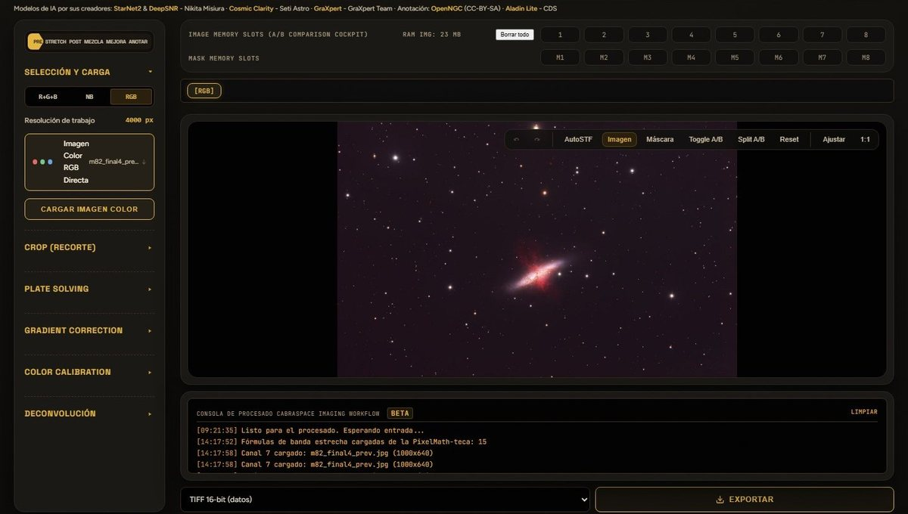

Se abren en el navegador. No hace falta instalar nada ni crear cuenta.

Nº I · la principalBetaCabraSpace Web
Procesa tus imágenes en el navegador: estirado, máscaras, anotación y separación de estrellas. Basado en el cockpit de PixInsight. Estirado, calibración y mezcla en tiempo real. Abrir CabraSpace Web
Nº IIPlanificación
Astro Forecast
Probabilidad de abrir, consejos de adquisición y sensores en vivo para AstroCamp.Previsión de las condiciones de observación para AstroCamp (Nerpio), con los consejos según la noche y la cúpula de cualquier objeto.Abrir Nº IIIEstiradoAutoGHS
Estirado automático con Generalised Hyperbolic Stretch, directamente en la web.Para tomas en banda estrecha o banda ancha, preservando el color y controlando el rango dinámico. Lee FITS, XISF, TIFF de 16 bits, PNG o JPG.Abrir Nº IVPlanificaciónContaminación lumínica
El mapa interactivo para elegir dónde montar.Encuentra los cielos más oscuros cerca de ti antes de cargar el coche, con DarkSkySites (mapa VIIRS y simulador APEX) o con Light Pollution Map (escala Bortle con decimales).Abrir Nº VConsultaPixelMath-teca
Más de 100 fórmulas PixelMath agrupadas, con un simulador en tiempo real para SHO y RGB.Prueba las mezclas en el simulador con tus propias imágenes y copia las ecuaciones directamente a PixInsight.Abrir
Próximamente
CabraPlanes
Qué aviones cruzarán el Sol o la Luna desde donde estás.
¿Necesitas algo que corra dentro de PixInsight?Programas para instalar
Guías y vídeos sobre contaminación lumínicaGuías